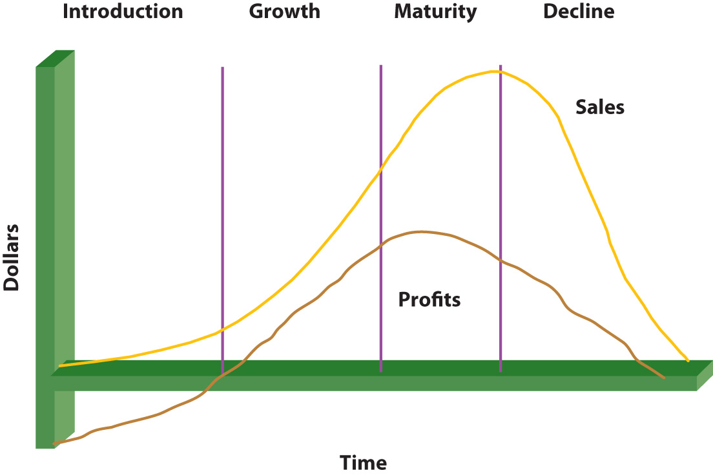
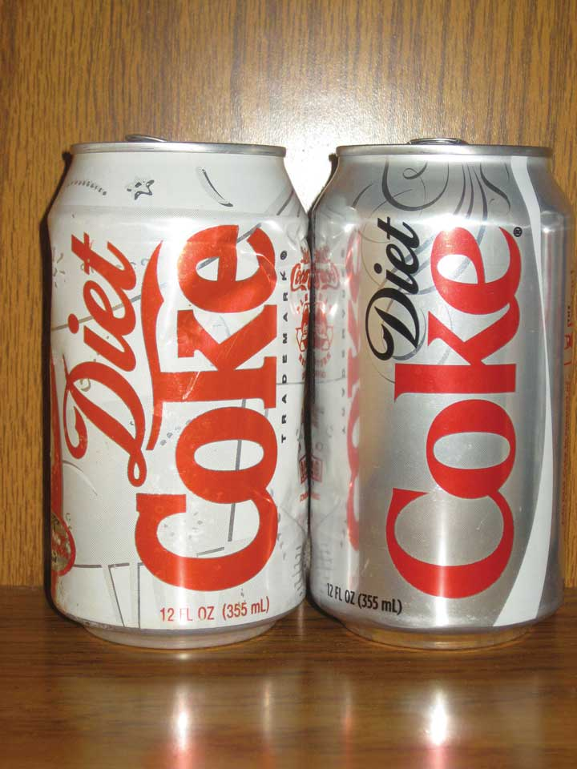
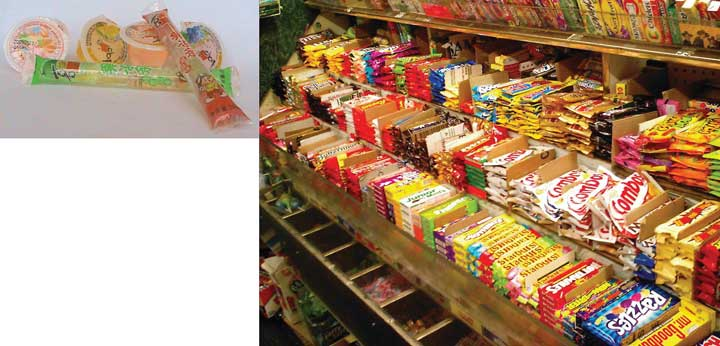
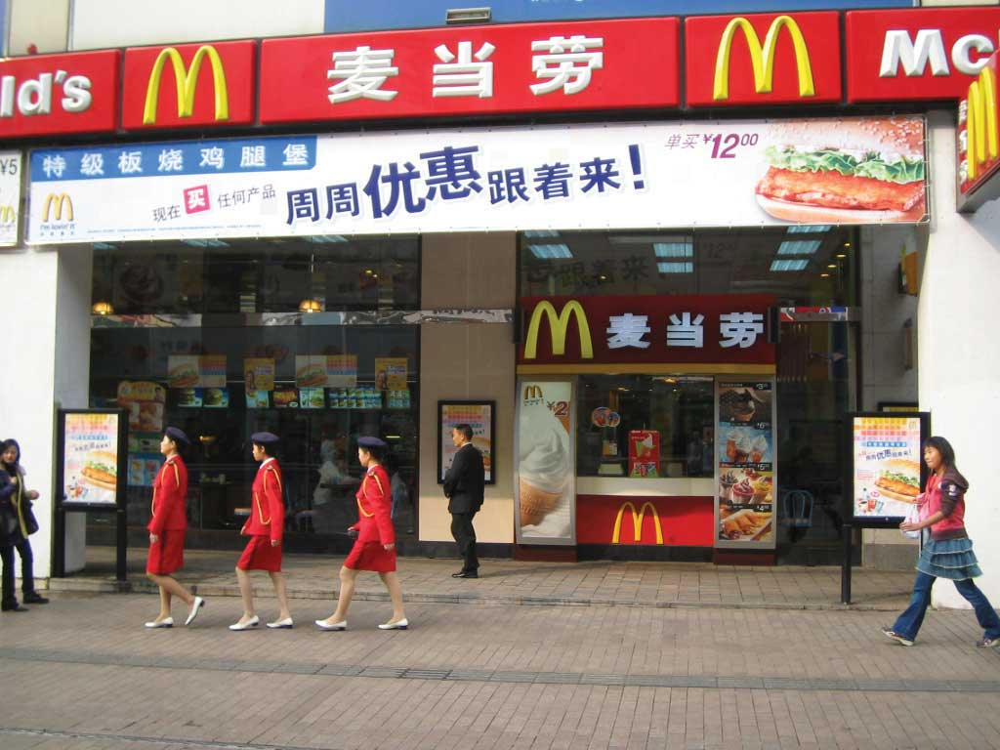
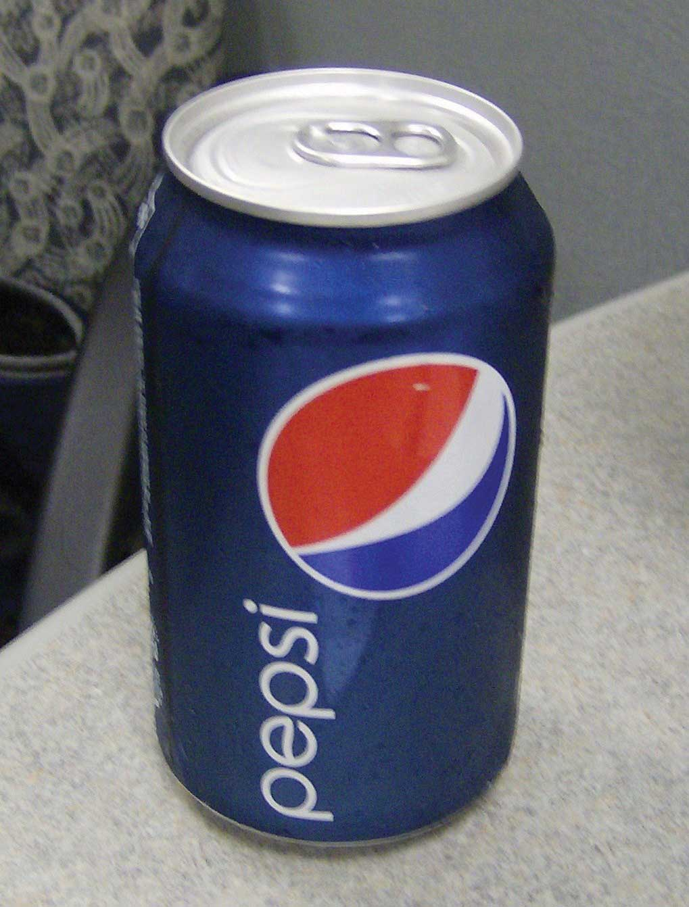

Having something that customers want to buy is important to any company. Most companies are started by people who get an idea about how to make something better. Hewlett-Packard, for example, began in 1939 in a garage (now a California Historic Landmark) when two young engineers, Bill Hewlett and Dave Packard, thought they had a better idea for designing and making a precision audio oscillator, which is an electronic device that tests sound. Their product was so much more precise than competitors’ products that it was manufactured and sold around the world for over thirty years. In fact, it is probably one of the longest-selling electronic devices ever. It also sold for just $54, whereas competing products sold for over $200. Hewlett-Packard, now more commonly known as HP, has not been located in a little garage for many years. Yet the company’s ability to grow by successfully designing and marketing new offerings continues.
Figure 7.1
Hewlett-Packard was founded in this California garage, which is now a national landmark.
Source: Wikimedia Commons.
Developing new offerings is a constant process in most companies. In some instances, a company starts with a price and then develops products and services to fit that price. IKEA is an example of a company that does this. IKEA looks at the various prices consumers are willing to pay for home furnishings and then works backward to design products that match those prices (using a demand backward pricing strategy is discussed in the pricing chapter). In other situations, the goal is simply to develop a better product that adds value to existing products, and the price comes later. Hewlett-Packard’s audio oscillator is an example of this type of product.
Keep in mind that a “new” product can be a “new and improved” product, such as laundry detergent; an addition to a product or service line, such as Marriott adding the Courtyard by Marriott and the Fairfield Inn or Capri Sun adding new flavors; a repositioned product or company, such as Hyundai Motor Company trying to change the perceptions of Hyundai automobiles from being inexpensive to being “an overachieving, underappreciated brand that smart people are discovering”;“At Hyundai, Branding Is Job 2,” BusinessWeek, May 21, 2007, http://www.businessweek.com/magazine/content/07_21/b4035069.htm (accessed January 20, 2010). or a totally new innovation, such as the iPad computer. What is new for one company may not be new to another. For example, one hotel may already have budget properties, but when a luxury hotel adds a budget property, that property is considered a new offering for them.
Most new offerings go through similar stages in their development process. Although the size of a company will affect how the different stages of their new product development process are conducted and whether products are test marketed before being introduced, the steps are generally the same. Figure 7.2 "The New Offering Development Process" summarizes these steps.
Figure 7.2 The New Offering Development Process

Many companies, HP and Apple included, were launched in someone’s garage after the founders got an idea for a product and then tried to make and sell it. HP’s first product was an audio oscillator that two Stanford University students developed. Apple’s Macintosh microcomputer was a low-cost knockoff of the Xerox Star, a software-equipped workstation. Apple’s cofounder, Steve Jobs, saw the product demonstrated at a Xerox research center and Xerox was an early investor in Apple.Lawrence M. Fisher, “Xerox Sues Apple Computer Over Macintosh Copyright,” New York Times, December 15, 1989, http://www.nytimes.com/1989/12/15/business/company-news-xerox-sues-apple-computer-over-macintosh-copyright.html? pagewanted=1 (accessed January 20, 2010).
Employees often come up with new product ideas, too. At Motorola, engineers are working on a mobile phone that can be recharged by rubbing it on smooth surface. A Motorola engineer came up with the idea while rollerblading. He wondered if a small generator could be created to capture and store the energy generated by rollerblade wheels. This idea, in turn, led to the development of a small roller ball (like you would find on an old-style computer mouse) built into the mobile phone. To power up the phone, you just give it a roll.
Ideas can come from anywhere, including your customers. In fact, in business-to-business (B2B) markets, customers are probably the biggest source of new product ideas. Customers know what customers need and want, which provides organizations an indication of market needs. Customers who are good at generating new product ideas or applications of products are called lead usersPotential customers who are innovative and develop new applications or new products for their own use without the aid of a supplier.. These people are often courted by manufacturers for this purpose. Lead users exist in consumer markets, too. JCPenney, for example, utilizes a panel of women who help develop and improve the company’s Ambrielle line of lingerie products.
Customers are particularly important cocreators of offerings when they are consuming products with service components. For example, if you provide your hairdresser with feedback while your hair is being cut, your input will alter the final style you receive. Similarly, a businessperson who provides her certified public accountant (CPA) with information and feedback about her firm will help the CPA develop better financial and tax plans for her business.
Suppliers provide another source of ideas for new products. A supplier might develop a new product or technology that can be used to make yet another product, and then go to the makers of those products and suggest new versions of them. For example, McClancy Seasoning Co. makes spices that restaurants and food processing companies use in their food products. McClancy’s research and development department works with companies such as Campbell’s to help them develop new and better offerings (for more information, visit http://www.mcclancy.com/research_and_development.asp).
Figure 7.4

Campbell’s creates many new products, including varieties of their Pace products, that may result from working with their suppliers.
Source: Wikimedia Commons.
Of course, companies also watch their competitors to see what they’re doing. Some offerings are protected by patents or copyrights and can’t be legally duplicated. The software that runs Apple’s iPhone is an example. There are, however, different ways to achieve the same results as Apple has with its iPhone. The Droid, manufactured by Motorola, and the G5, a copy of the Google phone, are devices similar to the iPhone that operate with software serving the same purpose.
Figure 7.5 "New Offering Ideas" shows some product ideas that came from each of the sources we have discussed—employees, customers, suppliers, and one’s competitors. Innovations like the iPhone are rare. However, many new ideas (and consequently new products) aren’t actually new but rather are versions of products and services already available. A line extensionA new idea or offering that occurs when a company comes out with another model (related product or service) based on the same platform and brand as one of its other products. occurs when a company comes out with another model (related product) based on the same platform and brand as one of its other products. When Apple added the Nano and the Shuffle to its iPod line, these were line extensions.
Figure 7.5 New Offering Ideas

Keep in mind that idea generation is typically the least expensive step in the process of developing a new offering, whether you involve customers or not. As you move through the product development process, each step is usually more expensive than the last. Ideas for new products are relatively cheap and easy to generate; what is difficult and expensive is making them a reality.
Not all new product ideas are good ones. Famous product blunders include Ford Motor Company’s Edsel, Clear Pepsi, and Coca-Cola’s New Coke. Less famous is Dell’s cell phone for aging baby boomers. The phone’s large size, large buttons, and large screen screamed “I’m old and blind!” leading potential users to shun it in droves. Yes, even the big companies make mistakes.
Figure 7.6

Better idea screening might have helped Coca-Cola avoid the problems it encountered marketing its “New Coke” formula.
Source: Wikimedia Commons.
The purpose of idea screening is to try to avoid mistakes early in the development process. The sooner bad ideas are discarded, the less the investment made and lost. In the idea screening stage, the company tries to evaluate the new offering by answering these questions:
Some organizations conduct concept testing at this stage. Concept testingPresenting an idea for an offering (including possible marketing communication ideas) to consumers for their reaction early in the offering development process. involves running the idea of the offering by potential consumers. The purpose is to get early consumer feedback before investing too much money in an offering that won’t work. Some of the methods used to test concepts include focus groupsA group of potential buyers brought together to discuss a marketing research topic with one another., in which groups of eight to twelve consumers gather and react to the concept, and depth interviewsAn exploratory research technique of engaging in detailed, one-on-one, question-and-answer sessions with potential buyers., in which individuals are presented with the concept and can react to it individually. Focus groups and depth interviews are research techniques that can also be used later in the offering development process to test ideas, or for other purposes. Focus groups working virtually on the Web and by phone actually helped to develop this textbook. Concepts may also be tested online by creating an image and having people representative of the target market provide feedback. Whether using focus groups, depth interviewing, or online methods, concepts must be evaluated by people representative of the target market or the feedback is not relevant.
Because screening considers the feasibility of actually making and servicing an offering, price and cost are important components. If the company cannot sell the product in sufficient quantities to generate a profit, the idea must be scrapped. Understanding the customer’s personal value equation (defined elsewhere as value being equal to benefits received minus the cost, which includes the time and effort of shopping and using) is an important consideration, too. If the value consumers receive from the product is less than the price the company charges for it, they will not buy it. In other words, the offering must be financially feasible to justify investing in it.
The offering must also have process feasibility. Process feasibilityThe degree to which the manufacturing of a product or the delivery of a service can be done within the proper quality specifications on a repeatable basis; the degree to which an organization can actually make and service an offering. is the degree to which the company can actually make and service the product. Process feasibility affects financial feasibilityA new offering’s ability to make money.. If the product’s costs cannot be controlled when it’s being made or serviced, the firm’s financial goals won’t be met. Process feasibility also affects customer satisfaction. For example, many manufacturers make great-looking faucets, yet one of your authors had to have the “guts” of one faucet replaced three times before it would work, only to find two other friends had the same experience with the same model. A great-looking design is really only great if it works right.
The question of strategic fit is a difficult one. The history of business is rife with examples of companies failing to develop winning new products only to see their competitors do so. For example, when the inventor Chester Carlson approached IBM executives with the idea of photocopying—the technology platform that later became the heart of Xerox Corporation—they turned Carlson down. IBM did not see the product fitting with its strategy and stopped before they fully considered the potential. Nor did IBM see the moneymaking opportunity the product presented.
Figure 7.7

A good product doesn’t just look right. It also works right, which is the idea behind process feasibility.
Source: Wikimedia Commons.
At this point in the process, the company begins to assess two types of risk. The first is investment riskThe potential of losing one’s money and time should a new offering fail., or the possibility that the company will fail to earn the appropriate return on the money and effort (the investment) it puts into the new product. The second is opportunity riskThe potential loss of revenue a company risks when it chooses an alternative course of action such as launching a different offering., or the risk that there is a better idea that gets ignored because the firm has invested in the idea at hand. When a company is assessing fit, it is assessing its opportunity risk. When it is assessing feasibility (both financial and process), it is assessing its investment risk. Other risk-related questions include whether or not the offering can be developed on time and within budget. Assessing a product’s feasibility continues throughout the entire new product development process.
The next step involves narrowing down the product’s features. Again, price enters the picture as the company considers which features are important to consumers at different price points. A premium (high-priced) offering is likely to be loaded with extra features. By contrast, a low-priced offering is likely to be a “bare-bones” product with few features.
Quality function deployment (QFD)A specific process for designing new offerings that begins by specifying a customer’s requirements and then designing a product to meet those needs. is a process whereby a company begins with the customer’s desired benefits and then designs an offering that delivers those benefits. The benefits are linked to certain characteristics of the offering, which are then broken down into component-part characteristics. From this list of component parts, the product is designed. Thus, the feature specifications process begins with a strong understanding of what consumers want and need.
HP has developed a number of computer printers using the QFD process. The QFD process has been particularly helpful when it comes to bundling the right features within the HP’s printer line because each printer model can be targeted to specific customer needs. Customers can then purchase the model that best suits their needs and doesn’t have a bunch of features that don’t add value for them.
In the development stage, the actual offering is designed, specifications for it are written, and prototypes of it are developed. It is also during this stage that the firm considers the product’s manufacturing process. For example, when a restaurant is developing a new dish, it must not only taste good; it must also be a dish that can be made in a reasonable amount of time once it’s ordered and prepared at a cost that earns the restaurant a profit. In terms of a manufacturer’s offerings, using the same technology platform as another product (like Apple has done with iPhones) can be very effective and cheaper. Using the same platform also generally makes it easier for a company to train its technicians to service a new product.
During the testing stage, the offering is tested, first in the lab and then with real customers. Lab testing is also called alpha testingThe testing of a product in a laboratory setting.. Alpha testing ensures that the offering works like it’s supposed to in a variety of different environments—that it meets its specifications, that is. For example, Kraft might launch a new food product that has to work in hot climates, cold climates, high humidity, dry climates, and high altitudes—all conditions that can change how well the product works.
The next step is beta testing. During beta testingThe testing of a product by real customer in the customer’s location., actual customers make sure the offering works under real-world conditions. Beta testing not only tests whether the offering works as advertised but also tests the offering’s delivery mechanisms, service processes, and other aspects of marketing the product. This step can be an expensive. Depending on the product, some companies might find it better to simply launch the product and let the market respond to, or test, it once it is available for purchase.
In B2B settings, beta tests are usually conducted with lead users and preferred customers. The developer of the product needs a strong relationship with these customers because the product might still have bugs that need to be ironed out. If the relationship between the parties is “iffy,” and the product or service needs a significant amount of changes, beta testing could damage the relationship between the two parties and hurt the developer of the product’s sales.
Simultaneous to testing the offering’s ability to meet its specs, the company is also developing and testing the marketing communication plan that will be used to launch the product. Many companies involve consumer panels or user communities, both for testing the offering and the communication plan. As we mentioned, JCPenney solicits the advice of a user community for its Ambrielle line of lingerie. The company frequently runs concepts by the group as well as sends actual prototypes to users to try on and report back to the company. Similarly, the data warehousing company Teradata has a “partners” organization that consists of a community of users who participate in the firm’s product design and testing.
Once an offering has been designed and tested, it is made available to customers. Sometimes a company launches the offering to all of its markets at once. Other companies may use a rolling launchIntroducing a new offering across markets one by one in order to work out any challenges or problems related to marketing and supporting the offering. in which the offering is made available to certain markets first and then other markets later. A rolling launch might make sense if the company’s service technicians need training. The company makes the offering available to one market after the first batch of its employees are prepared to service the product; then as new batches of employees are prepared to service the product, the company enters more markets. See the following video clip for an example of a new product launch.
Example of a Successful New Product Launch
http://www.youtube.com/v/4yVQJ6jJPakThis YouTube video documents the launch of Apple’s iPhone 3G.
Some companies test the complete launch of a product’s marketing plan to ensure that it reaches buyers, gets positive feedback, and generates sales of the product or service. This is called a market testThe test launch of a product’s complete marketing plan to ensure that it reaches buyers, gets positive reactions, and generates sales of the product.. Companies may conduct market tests in limited markets or nationwide. For example, when one beverage maker tested the marketing plan for a new wine cooler, the firm first launched the product on the east coast, where the beverage was promoted as a “Polynesian” drink; on the west coast, the beverage was promoted as an “Australian” drink. The Polynesian version proved more popular, so in other new markets, that’s how the beverage was advertised and packaged.
Once an offering is launched, a firm’s executives carefully monitor its progress. You have probably heard about the “box office” sales for new movies the first weekend following their release. The first weekend is a good predictor of how much money a movie will make overall. If the ticket sales for it are high during the first weekend, a studio’s executives might decide to beef up the promotions for it. If the ticket sales for the movie are low, the studio might stop screening the movie in theaters altogether and release it on DVD instead. For other types of offerings, important milestones might be the first ninety days after the product is launched, followed by a second period of ninety days, and so forth. However, be aware that firms are constantly in the process of evaluating their offerings and modifying them by either adding or subtracting the features and services associated with them, changing their prices, or how they are marketed. The length of time for milestones used to evaluate products may vary depending on the organization and other products or services being developed.
Most companies put new offering ideas through a seven-step process, beginning with the idea generation stage. Ideas for new offerings can come from anywhere including one’s customers, employees, customers, suppliers, and competitors. The next step in the process is the idea screening stage, followed by the feature specifications, development, testing, and launching stages. After an offering is launched, it is evaluated. A company must balance an offering’s investment risk (the risk associated with losing the time and money put into developing the offering) against the offering’s opportunity risk (the risk associated with missing the opportunity to market the product and profit from it).
Over 20,000 new offerings, including convenience foods, health and beauty aids, electronics, automobiles, pharmaceutical products, hotels, restaurants, and so on, enter the marketplace each year. For example, in 2006 almost 1,400 food products making a “whole grain claim” were introduced.Nick Roskelly, “Partial to Whole Grains,” New Products Online, http://www.newproductsonline.com/Archives_Davinci?article=1979 (accessed January 20, 2010). Other recent new product introductions include many technological products such as Nintendo’s Wii, iPhones, and digital video recorders (DVRs); many new personal care products such as new fragrances of shampoo and conditioner and new flavors of toothpaste; and new convenience foods such as frozen meals, “100 calorie pack” snacks, and cereal bars.Molly Hunter, “The True Cost of the 100-Calorie Snack Pack,” ABC News, July 15, 2008, http://abcnews.go.com/Health/story?id=5373173&page=1&mediakit=adgallery10 (accessed January 20, 2010).
Oreo 100 Calorie Pack
http://www.youtube.com/v/ZNfqKHSkL7oThe 100 Calorie Packs offered by Nabisco proved to be extremely popular.
Once a product is created and introduced in the marketplace, the offering must be managed effectively for the customer to receive value from it. Only if this is done will the product’s producer achieve its profit objectives and be able to sustain the offering in the marketplace. The process involves making many complex decisions, especially if the product is being introduced in global markets. Before introducing products in global markets, an organization must evaluate and understand factors in the external environment, including laws and regulations, the economy and stage of economic development, the competitors and substitutes, cultural values, and market needs. Companies also need expertise to successfully launch products in foreign markets. Given many possible constraints in international markets, companies might initially introduce a product in limited areas abroad. Other organizations, such as Coca-Cola, decide to compete in markets worldwide.“Best Global Brands,” Interbrand, 2009, http://www.interbrand.com/best_global_brands.aspx?langid=1000 (accessed January 20, 2010).
The product life cycle (PLC)The stages (introduction, growth, maturity, decline) that a product may go through over time. includes the stages the product goes through after development, from introduction to the end of the product. Just as children go through different phases in life (toddler, elementary school, adolescent, young adult, and so on), products and services also age and go through different stages. The PLC is a beneficial tool that helps marketers manage the stages of a product’s acceptance and success in the marketplace, beginning with the product’s introduction, its growth in market share, maturity, and possible decline in market share. Other tools such as the Boston Consulting Group matrix and the General Electric approach (see Chapter 2 "Strategic Planning" for discussion) may also be used to manage and make decisions about what to do with products. For example, when a market is no longer growing but the product is doing well (cash cow in the BCG approach), the company may decide to use the money from the cash cow to invest in other products they have rather than continuing to invest in the product in a no-growth market.
The product life cycle can vary for different products and different product categories. Figure 7.8 "Life Cycle" illustrates an example of the product life cycle, showing how a product can move through four stages. However, not all products go through all stages and the length of a stage varies. For example, some products never experience market share growth and are withdrawn from the market.
Figure 7.8 Life Cycle
Figure 7.9
Diet Coke changed its can to keep from getting outdated.
Source: Wikimedia Commons.
Other products stay in one stage longer than others. For example, in 1992, PepsiCo introduced a product called Clear Pepsi, which went from introduction to decline very rapidly. By contrast, Diet Coke entered the growth market soon after its introduction in the early 1980s and then entered (and remains in) the mature stage of the product life cycle. New computer products and software and video games often have limited life cycles, whereas product categories such as diamonds and durable goods (kitchen appliances) generally have longer life cycles. How a product is promoted, priced, distributed, or modified can also vary throughout its life cycle. Let’s now look at the various product life cycle stages and what characterizes each.
The first stage in a product’s life cycle is the introduction stageThe first stage of the product life cycle after a product is launched.. The introduction stage is the same as commercialization, or the last stage of the new product development process. Marketing costs are typically higher in this stage than in other stages. As an analogy, think about the amount of fuel a plane needs for takeoff relative to the amount it needs while in the air. Just as an airplane needs more fuel for takeoff, a new product or service needs more funds for introduction into the marketplace. Communication (promotion) is needed to generate awareness of the product and persuade consumers to try it, and placement alternatives and supply chains are needed to deliver the product to the customers. Profits are often low in the introductory stage due to the research and development costs and the marketing costs necessary to launch the product.
The length of the introductory stage varies for different products. However, by law in the United States, a company is only allowed to use the label “new” on a product’s package for six months. An organization’s objectives during the introductory stage often involve educating potential customers about its value and benefits, creating awareness, and getting potential customers to try the product or service. Getting products and services, particularly multinational brands, accepted in foreign markets can take even longer. Consequently, companies introducing products and services abroad generally must have the financial resources to make a long-term (longer than one year) commitment to their success.
The specific promotional strategies a company uses to launch a product vary depending on the type of product and the number of competitors it faces in the market. Firms that manufacture products such as cereals, snacks, toothpastes, soap, and shampoos often use mass marketing techniques such as television commercials and Internet campaigns and promotional programs such as coupons and sampling to reach consumers. To reach wholesalers and retailers such as Walmart, Target, and grocery stores, firms utilize personal selling. Many firms promote to customers, retailers, and wholesalers. Sometimes other, more targeted advertising strategies are employed, such as billboards and transit signs (signs on buses, taxis, subways, and so on). For more technical or expensive products such as computers or plasma televisions, many firms utilize professional selling, informational promotions, and in-store demonstrations so consumers can see how the products work.
Figure 7.10
Many new convenient snack packages, such as jelly snacks and packages of different sizes, are available in China and the United States.
Source: Wikimedia Commons.
During introduction, an organization must have enough distribution outlets (places where the product is sold or the service is available) to get the product or service to the customers. The product quantities must also be available to meet demand. For example, IBM’s ThinkPad was a big hit when it was first introduced, but the demand for it was so great that IBM wasn’t able to produce enough of the product. Cooperation from a company’s supply chain members—its manufacturers, wholesalers, and so forth—helps ensure that supply meets demand and that value is added throughout the process.
When you were growing up, you may remember eating Rice Krispies Treats cereal, a very popular product. The product was so popular that Kellogg’s could not keep up with initial demand and placed ads to consumers apologizing for the problem. When demand is higher than supply, the door opens for competitors to enter the market, which is what happened when the microwave was introduced. Most people own a microwave, and prices have dropped significantly since Amana introduced the first microwave at a price of almost $500. As consumers in the United States initially saw and heard about the product, sales increased from forty thousand units to over a million units in only a few years. Sales in Japan increased even more rapidly due to a lower price. As a result of the high demand in both countries, many competitors entered the market and prices dropped.“Microwave Oven,” Wikipedia, http://en.wikipedia.org/wiki/Microwave_oven (accessed January 20, 2010).
Product pricing strategies in the introductory stage can vary depending on the type of product, competing products, the extra value the product provides consumers versus existing offerings, and the costs of developing and producing the product. Organizations want consumers to perceive that a new offering is better or more desirable than existing products. Two strategies that are widely used in the introductory stage are penetration pricing and skimming. A penetration pricing strategyA strategy in which an organization offers a low initial price on a product so that it captures as much market share as possible. involves using a low initial price to encourage many customers to try a product. The organization hopes to sell a high volume in order to generate substantial revenues. New varieties of cereals, fragrances of shampoo, scents of detergents, and snack foods are often introduced at low initial prices. Seldom does a company utilize a high price strategy with a product such as this. The low initial price of the product is often combined with advertising, coupons, samples, or other special incentives to increase awareness of the product and get consumers to try it.
A company uses a skimming pricing strategyA high initial price that companies set when introducing new products in order to get back money invested., which involves setting a high initial price for a product, to more quickly recoup the investment related to its development and marketing. The skimming strategy attracts the top, or high end, of the market. Generally this market consists of customers who are not as price sensitive or who are early adopters of products. Firms that produce electronic products such as DVRs, plasma televisions, and digital cameras set their prices high in the introductory stage. However, the high price must be consistent with the nature of the product as well as the other marketing strategies being used to promote it. For example, engaging in more personal selling to customers, running ads targeting specific groups of customers, and placing the product in a limited number of distribution outlets are likely to be strategies firms use in conjunction with a skimming approach.
If a product is accepted by the marketplace, it enters the growth stage of the product life cycle. The growth stageThe stage of the life cycle in which sales increase and more competitors enter the market. is characterized by increasing sales, more competitors, and higher profits. Unfortunately for the firm, the growth stage attracts competitors who enter the market very quickly. For example, when Diet Coke experienced great success, Pepsi soon entered with Diet Pepsi. You’ll notice that both Coca-Cola and Pepsi have similar competitive offerings in the beverage industry, including their own brands of bottled water, juice, and sports drinks. As additional customers begin to buy the product, manufacturers must ensure that the product remains available to customers or run the risk of them buying competitors’ offerings. For example, the producers of video game systems such as Nintendo’s Wii could not keep up with consumer demand when the product was first launched. Consequently, some consumers purchased competing game systems such as Microsoft’s Xbox.
Figure 7.11
Demand for the Nintendo Wii increased sharply after the product’s introduction.
Source: Wikimedia Commons.
A company sometimes increases its promotional spending on a product during its growth stage. However, instead of encouraging consumers to try the product, the promotions often focus on the specific benefits the product offers and its value relative to competitive offerings. In other words, although the company must still inform and educate customers, it must counter the competition. Emphasizing the advantages of the product’s brand name can help a company maintain its sales in the face of competition. Although different organizations produce personal computers, a highly recognized brand such as IBM strengthens a firm’s advantage when competitors enter the market. New offerings that utilize the same successful brand name as a company’s already existing offerings, which is what Black & Decker does with some of its products, can give a company a competitive advantage. Companies typically begin to make a profit during the growth stage because more units are being sold and more revenue is generated.
The number of distribution outlets (stores and dealers) utilized to sell the product can also increase during the growth stage as a company tries to reach as much of the marketplace as possible. Expanding a product’s distribution and increasing its production to ensure its availability at different outlets usually results in a product’s costs remaining high during the growth stage. The price of the product itself typically remains at about the same level during the growth stage, although some companies reduce their prices slightly to attract additional buyers and meet the competitors’ prices. Companies hope by increasing their sales, they also improve their profits.
After many competitors enter the market and the number of potential new customers declines, the sales of a product typically begin to level off. This indicates that a product has entered the maturity stageThe stage of the product life cycle at which sales begin to level off and competitors have saturated the market. of its life cycle. Most consumer products are in the mature stage of their life cycle; their buyers are repeat purchasers versus new customers. Intense competition causes profits to fall until only the strongest players remain. The maturity stage lasts longer than other stages. Quaker Oats and Ivory Soap are products in the maturity stage—they have been on the market for over one hundred years.
Given the competitive environment in the maturity stage, many products are promoted heavily to consumers by stronger competitors. The strategies used to promote the products often focus on value and benefits that give the offering a competitive advantage. The promotions aimed at a company’s distributors may also increase during the mature stage. Companies may decrease the price of mature products to counter the competition. However, they must be careful not to get into “price wars” with their competitors and destroy all the profit potential of their markets, threatening a firm’s survival. Intel and Advanced Micro Devices (AMD) have engaged in several price wars with regard to their microprocessors. Likewise, Samsung added features and lowered the price on its Instinct mobile phone, engaging in a price war with Apple’s iPhone. With the weakened economy, many online retailers engaged in price wars during the 2008 holiday season by cutting prices on their products and shipping costs; they repeated this price war strategy in 2011. Although large organizations such as Amazon.com can absorb shipping costs, price wars often hurt smaller retailers. Many retailers learned from their mistakes and ordered less inventory for the 2009 holiday season; it remains to be seen what will happen in the 2012 holiday season.
Companies are challenged to develop strategies to extend the maturity stage of their products so they remain competitive. Many firms do so by modifying their target markets, their offerings, or their marketing strategies. Next, we look at each of these strategies.
Modifying the target market helps a company attract different customers by seeking new users, going after different market segments, or finding new uses for a product in order to attract additional customers. Financial institutions and automobile dealers realized that women have increased buying power and now market to them. With the growth in the number of online shoppers, more organizations sell their products and services through the Internet. Entering new markets provides companies an opportunity to extend the product life cycles of their different offerings.
Figure 7.12 McDonald’s in China
Source: Wikimedia Commons.
Many companies enter different geographic markets or international markets as a strategy to get new users. A product that might be in the mature stage in one country might be in the introductory stage in another market. For example, when the U.S. market became saturated, McDonald’s began opening restaurants in foreign markets. Cell phones were very popular in Asia before they were introduced in the United States. Many cell phones in Asia are being used to scan coupons and to charge purchases. However, the market in the United States might not be ready for that type of technology.
Modifying the product, such as changing its packaging, size, flavors, colors, or quality can also extend the product’s maturity stage. The 100 Calorie Packs created by Nabisco provide an example of how a company changed the packaging and size to provide convenience and one-hundred-calorie portions for consumers. While the sales of many packaged foods fell, the sales of the 100 Calorie Packs increased to over $200 million, prompting Nabisco to repackage more products.Molly Hunter, “The True Cost of the 100-Calorie Snack Pack,” ABC News, July 15, 2008, http://abcnews.go.com/Health/story?id=5373173&page=1&mediakit=adgallery10 (accessed January 20, 2010). Kraft Foods extended the mature stage of different crackers such as Wheat Thins and Triscuits by creating different flavors. Although not popular with consumers, many companies downsizeTo decrease the size of the package or the amount of product in the package. (or decrease) the package sizes of their products or the amount of the product in the packages to save money and keep prices from rising too much.
Figure 7.14 Pepsi’s New Can
Source: Wikimedia Commons.
Car manufacturers modify their vehicles slightly each year to offer new styles and new safety features. Every three to five years, automobile manufacturers do more extensive modifications. Changing the package or adding variations or features are common ways to extend the mature stage of the life cycle. Pepsi recently changed the design and packaging of its soft drinks and Tropicana juice products. However, consumers thought the new juice package looked like a less expensive brand, which made the quality of the product look poorer. As a result, Pepsi resumed the use of the original Tropicana carton. Pepsi’s redesigned soda cans also received negative consumer reviews.
Pepsi Rebranding
http://www.youtube.com/v/tZJRJy0UK4gChanging packing designs does not always help the brand.
Tropicana’s New Packaging
http://www.youtube.com/v/_GzVpG3jfR4Tropicana’s new (and now abandoned) packaging look didn’t compare well with the “orange and the straw” but is still used on the lower-calorie Tropicana.
When introducing products to international markets, firms must decide if the product can be standardizedKeeping a product or service the same in all markets. (kept the same) or how much, if any, adaptationThe changes that an organization must make for a product or service to fit the local culture., or changing, of the product to meet the needs of the local culture is necessary. Although it is much less expensive to standardize products and promotional strategies, cultural and environmental differences usually require some adaptation. Product colors and packages as well as product names must often be changed because of cultural and legal differences. For example, in many Asian and European countries, Coca-Cola’s diet drinks are called “light,” not diet, due to legal restrictions on how the word diet can be used. GE makes smaller appliances such as washers and dryers for the Japanese market because houses tend to be smaller and don’t have the room for larger models. Hyundai Motor Company had to improve the quality of its automobiles in order to compete in the U.S. market. Companies must also examine the external environment in foreign markets since the regulations, competition, and economic conditions vary as well as the cultures.
Figure 7.15
In Europe, diet drinks are called “light,” not diet. This Coca-Cola product is available in Germany.
Source: Wikimedia Commons.
Some companies modify the marketing strategy for one or more marketing variables of their products. For example, many coffee shops and fast-food restaurants such as McDonald’s now offer specialty coffee that competes with Starbucks. As a result, Starbucks’ managers decided it was time to change the company’s strategy. Over the years, Starbucks had added lunch offerings and moved away from grinding coffee in the stores to provide faster service for its customers. However, customers missed the coffee shop atmosphere and the aroma of freshly brewed coffee and didn’t like the smell of all the lunch items.
As a result of falling market share, Starbucks’ former CEO and founder Howard Schultz returned to the company. Schultz hired consultants to determine how to modify the firm’s offering and extend the maturity stage of their life cycle. Subsequently, Starbucks changed the atmosphere of many of its stores back to that of traditional coffee shops, modified its lunch offerings in many stores, and resumed grinding coffee in stores to provide the aroma customers missed. The company also modified some of its offerings to provide health-conscious consumers lower-calorie alternatives.Bruce Horovitz, “Starbucks Orders an Extra Shot; Founder Takes Over as CEO to Perk Up Coffee Chain,” USA Today, January 8, 2008, 1B. After the U.S. economy weakened in 2009, Starbucks announced it would begin selling instant coffee for about a dollar a cup to appeal to customers who were struggling financially but still wanted a special cup of coffee. The firm also changed its communication with customers by utilizing more interactive media such as blogs.
Figure 7.16
The oldest operating McDonald’s is in California.
Source: Wikimedia Commons.
Whereas Starbucks might have overexpanded, McDonald’s plans to add fourteen thousand coffee bars to selected stores.“Starbucks v McDonald’s,” Economist, January 10, 2008, http://www.economist.com/business/displaystory.cfm?story_id=10498747 (accessed January 20, 2010). In addition to the coffee bars, many McDonald’s stores are remodeling their interiors to feature flat screen televisions, recessed lighting, and wireless Internet access. Other McDonald’s restaurants kept their original design, which customers still like.
When sales decrease and continue to drop to lower levels, the product has entered the decline stageThe stage of the life cycle at which sales drop and companies must decide whether to keep, modify, or drop a product. of the product life cycle. In the decline stage, changes in consumer preferences, technological advances, and alternatives that satisfy the same need can lead to a decrease in demand for a product. How many of your fellow students do you think have used a typewriter, adding machine, or slide rule? Computers replaced the typewriter and calculators replaced adding machines and the slide rule. Ask your parents about eight-track tapes, which were popular before cassette tapes, which were popular before CDs, which were popular before MP3 players and Internet radio. Some products decline slowly. Others go through a rapid level of decline. Many fads and fashions for young people tend to have very short life cycles and go “out of style” very quickly. (If you’ve ever asked your parents to borrow clothes from the 1990s, you may be amused at how much the styles have changed.) Similarly, many students don’t have landline phones or VCR players and cannot believe that people still use the “outdated” devices. Some outdated devices, like payphones, disappear almost completely as they become obsolete.
Technical products such as digital cameras, cell phones, and video games that appeal to young people often have limited life cycles. Companies must decide what strategies to take when their products enter the decline stage. To save money, some companies try to reduce their promotional expenditures on these products and the number of distribution outlets in which they are sold. They might implement price cuts to get customers to buy the product. HarvestingCompanies reduce investment in a product, service, or business. the product entails gradually reducing all costs spent on it, including investments made in the product and marketing costs. By reducing these costs, the company hopes that the profits from the product will increase until their inventory runs out. Another option for the company is divestingCompanies get rid of a product, service, or business. (dropping or deleting) the product from its offerings. The company might choose to sell the brand to another firm or simply reduce the price drastically in order to get rid of all remaining inventory. If a company decides to keep the product, it may lose money or make money if competitors drop out. Many companies decide the best strategy is to modify the product in the maturity stage to avoid entering the decline stage.
The product life cycle helps a company understand the stages (introduction, growth, maturity, and decline) a product or service may go through once it is launched in the marketplace. The number and length of stages can vary. When a product is launched or commercialized, it enters the introduction stage. Companies must try to generate awareness of the product and encourage consumers to try it. During the growth stage, companies must demonstrate the product’s benefits and value to persuade customers to buy it versus competing products. Some products never experience growth. The majority of products are in the mature stage. In the mature stage, sales level off and the market typically has many competitors. Companies modify the target market, the offering, or the marketing mix in order to extend the mature stage and keep from going into decline. If a product goes into decline, a company must decide whether to keep the product, harvest and reduce the spending on it until all the inventory is sold, or divest and get rid of the product.